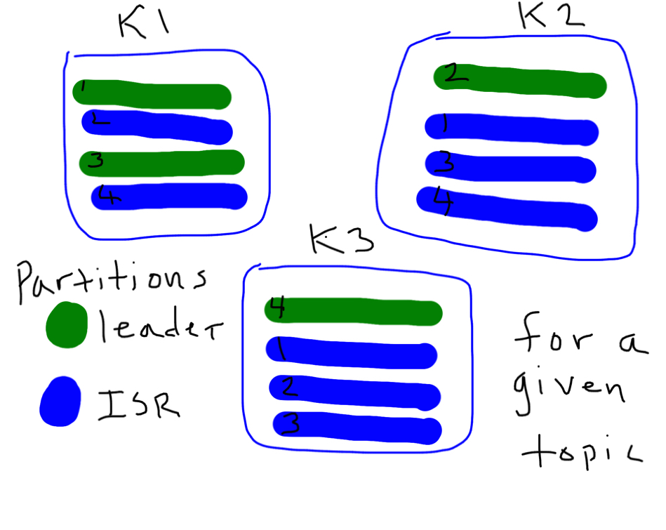
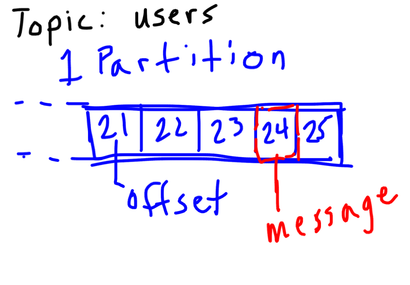
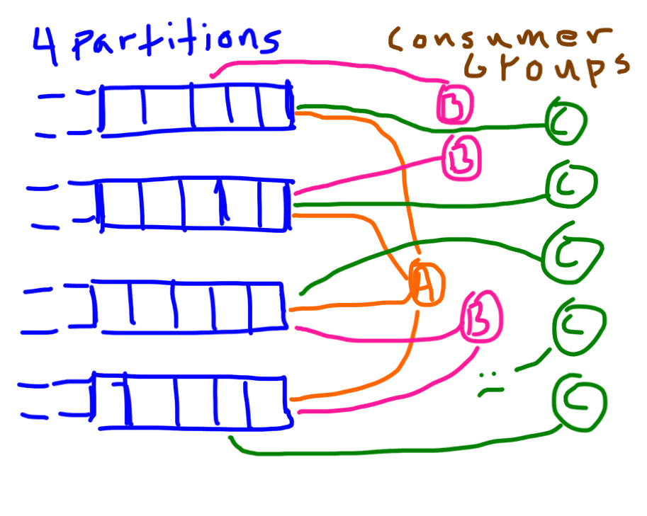

Kafka in a Flash
What Is Kafka
- A distributed message broker
- Created at LinkedIn
- Open sourced early 2011
- Top level apache project October 2012
Why Another Broker
- Current brokers didn't meet the needs of LinkedIn
- High throughput
- Very low latency
- Hardware sympathetic
How It Works
Broker Topology
- Manually set where partitions live in cluster
- Manually set where replicants reside
- Each partition has a leader
- ISR, in-sync-replica
- Failover to an ISR
...Broker Topology
Topics & Partitions
- One topic can have many partitions
- Paritions determine parallelism per consumer group
- Hard/Impossible to remove partitions, Hard to add
- Data deletion based on broker or topic settings
...Topics & Partitions
Consumers
Simple Consumer
- Read from a single partition
- Manually track offsets
- Manually handle partition offset changes
- Access to low level protocol messages
High Level Consumer
- Handles consumer groups
- Leader election for consumers within a group
- Partition leadership changes
- Offset tracking
...High Level Consumer
Differences from the Rest
- Ordered partitions
- Simple data structures
- Append only
- Pull based only
- Replication works
- Scalable, high throughput, low latency
Questions